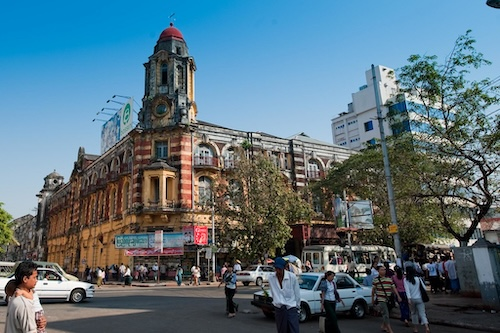
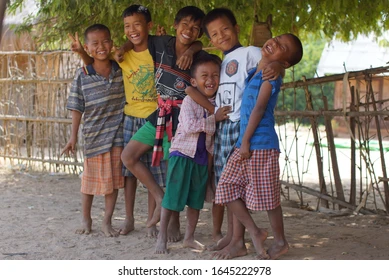
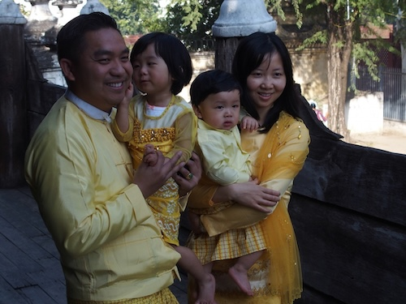
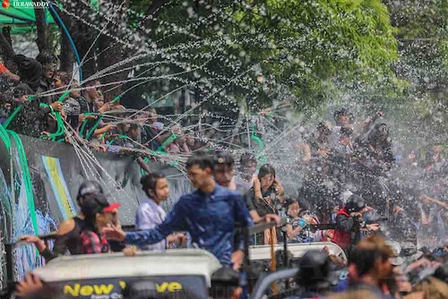
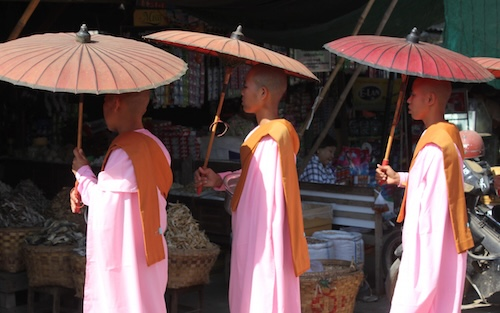

list Of Best Place In Myanmar
- Yangon
- Mandalay
- Bagan
- Inn Lay
- Taung Gyi
Down Town of Myanmar City
Children of Myanmar
Family of Myanmar
Thin Gyan Festival in Myanmar
Buddhist Nun in Myanmar
 Myanmar, also known as the Golden Land, is a country rich in history, culture, and natural beauty. From ancient temples and colonial cities to breathtaking landscapes, Myanmar offers a unique travel experience. Visitors can explore bustling markets, enjoy traditional Burmese cuisine, and witness the daily lives of warm and welcoming locals. Whether it's the spiritual aura of Yangon’s Shwedagon Pagoda or the peaceful waters of Inle Lake, every destination has something special to offer.
One of the most remarkable places in Myanmar is Bagan, an ancient city filled with over 2,000 temples and pagodas. Watching the sunrise over the Bagan plains, with golden temples stretching across the horizon, is a sight travelers never forget. Mandalay, the last royal capital, is home to historical sites like Mandalay Palace and the famous U Bein Bridge, the longest teakwood bridge in the world. Meanwhile, Taunggyi, located in the Shan Hills, is known for its cool weather and the spectacular Tazaungdaing Hot Air Balloon Festival.
For those seeking nature and adventure, Inle Lake offers an unforgettable experience with its floating villages, one-leg rowers, and vibrant local markets. Visitors can take boat tours, explore traditional handicrafts, and enjoy the stunning scenery of the surrounding mountains. With its diverse landscapes, deep-rooted traditions, and stunning landmarks, Myanmar is a must-visit destination for travelers looking to experience the beauty and culture of Southeast Asia.